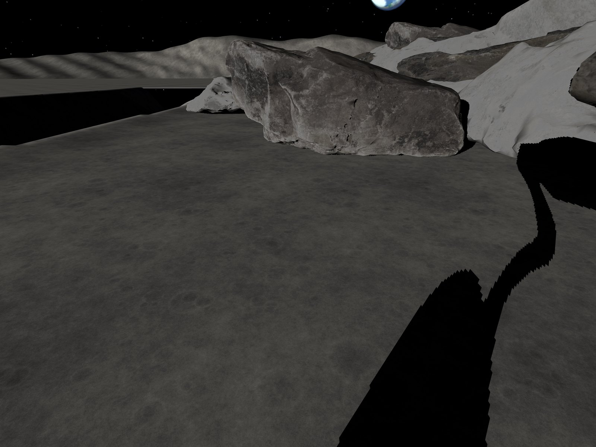
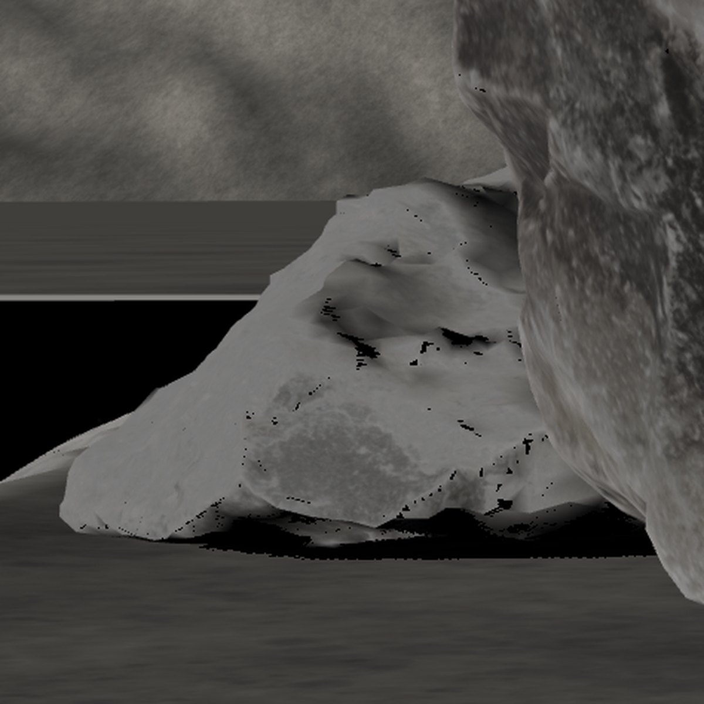

机器人只拍到石头的一面。
Lux3D 把这张照片，变成一整块石头。

这一面，相机从没见过
月球南极的阳光几乎贴着地面，石头背光的那一面全黑，相机什么都测不到。我们让 Lux3D 把看不见的那一面想出来，机器人先在想象里走一遍，全部安全，再真的走。
在月球南极，背面是真的看不见
在地球上，石头背后暗一点，天空的散射光也能把它照出轮廓；实在看不清，绕过去看一眼就行。
这里不行。太阳高度只有 10°，没有大气把光带到背面，影子里是全黑。机器人换个位置再看，那一面还是黑的。
所以它只剩一条路：从看得见的那一面，推出看不见的那一面。

可它偏偏要从背面旁边过去
一条窄道，一边是月溪，一边是大石堆。石头 A 挡在前面，石头 B 的后半截伸进了必须换道的地方，正好藏在黑影里。同一条路，三种开法。
第一眼看清了的地面看不见的地方：在影子里，或者被挡住石头画的是真实形状，机器人并不知道
第三台车说明了一件事：拦住前两台车的，就是黑暗本身。可真实的机器人拿不到黑影里的距离。那就把它想出来。
一张照片进去，一整块石头出来
下面每一个模型，都是比赛期间真实调用 Lux3D 得到的，一个没挑；形状原样，只为网页压小了贴图。每块石头要六份，因为一份想象可能是错的。点任意一份，把它转到背面看看。
石头 A在画面里有 765 像素高。六份都通过了检查。

石头 B只露出 251 像素，大半藏在 A 后面。六次调用，五份可用，两份通过。
怎么做到的
- 第一眼一共提交 12 个真实任务：得到 11 个模型，1 个服务端失败（任务 5958893，没有模型，不算作被拒）。
- 同一块石头用三种输入方式各生成两份，所以每块六份。
- 任务编号、实际上传的每一个字节、返回的模型和配准矩阵都留在仓库里：完整实验数据。
想出来的东西，凭什么信
-
先和看得见的那一面对一对
轮廓、尺寸、有没有伸进已经确认是空地的地方。标准在实验之前就定死，轮廓吻合度低于 0.7068 的直接拒掉。上面那些暗下去的，就是被拒的。
-
在每一个想象出来的世界里先走一遍
A 的六份乘 B 的两份，一共十二个世界。每个世界都用完整的物理仿真把这条路从头开到尾，十二个都安全才出发。
每一格里，石头换成了对应的那两份想象。为了看清路线，这里画的是石头的真实位置。
-
没把握，就再看一眼
想象全被拒掉的时候，机器人会开到能把那块石头看清楚的位置，重新拍，重新想。
然后才真的走
会想象的车：只看一眼，112.84 秒，安全到达终点。三台车里唯一一台。
背面想得对不对？
量给你看
执行结束后，我们把真实的石头拿出来对。看得见的那一面，两份通过检查的想象都对上了。
背面没有。它们比真实的石头分别短了 0.70 米和 0.60 米。
这一次车还是过去了，但离真实的石头最近只有 47.5 毫米。能过去是事实，过得很险也是事实。
有效，但不绝对
场景在跑之前就定好，不换、不挑，结果好坏都留着。下面是所有必须靠想象才过得去的场景。
谨慎的车和大胆的车，一次也没到过终点。会想象的车到过，也撞过：十三个场景，到达 4 次，碰撞 4 次。
它错在哪
- 没东西可想，1 次。一块石头完全藏在另一块后面，从头到尾没进过画面。车照着计划开过去，撞上了它。
- 背面想短了，3 次。看得见的那一面完全吻合，检查通过，每一个想象世界里的预演也都安全，真车却在石头背面蹭上了。后两次里，想象出的背面比真实的短了 0.4 到 0.85 米。
- 每一次的任务编号、路线和接触位置都在技术报告里。
检查拦下了什么
被检查拒掉的想象，我们事后一份一份强行信了它再跑：231 份里，有 30 份会让车撞上。
我们随后做了什么
把规则收紧：被挡住的地方不再靠想象，必须再看一眼。碰撞从 4 次降到 0 次，到达也从 4 次降到 1 次。安全了，也保守了。怎样既安全又能到，是下一步。
怎么做到的
- 前 8 个场景在第二轮实验前预先登记；后 5 个是修订方法定稿之后才第一次运行的留出场景。
- “黑影里能测距的车”只是对照：它多拿了一样真实机器人拿不到的东西，用来说明上限在哪。
- 修订后的方法标为赛后修订，和原结果并列，不替换原结果。
- 预先登记场景的原始汇总 修订与留出场景汇总
换你来开
看到的和机器人一样多：一张照片，一片黑影。走，还是再看一眼？